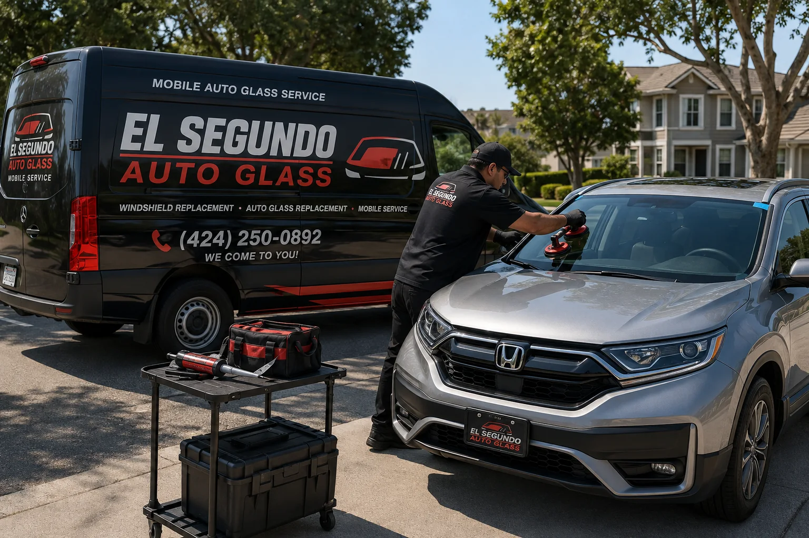

Explore
Auto Glass Services
Services, company information, and a direct way to contact El Segundo Auto Glass.
Contact us for a quote today!
Services, company information, and a direct way to contact El Segundo Auto Glass.

We bring auto glass service to your preferred location, helping make replacement more convenient.

Professional windshield replacement with a mobile approach for customers in the area.

Call El Segundo Auto Glass to discuss your auto glass replacement needs.
If you reside in El Segundo, California, and find yourself in need of reliable auto glass replacement or windshield replacement services, look no further! With over a decade of experience, our mobile auto glass service in El Segundo has been a trusted partner for countless customers in the area. Our commitment to quality, safety, and convenience sets us apart, ensuring that your vehicle's glass is in top-notch condition. In this article, we will delve into the various aspects of our services and how we have established ourselves as a leader in the industry.
One of the primary advantages of choosing our auto glass replacement service in El Segundo is our free mobile service. We understand that your time is precious, and dealing with a broken or cracked windshield can be frustrating. That's why we have fully equipped mobile units that can come to your preferred location, be it your home, workplace, or any other spot within the El Segundo area. Gone are the days of spending hours at a physical repair shop – we bring the solution to you!
Your safety is our top priority. Our expert technicians are trained to handle various auto glass replacement tasks with precision and care. When it comes to windshields, we offer safety laminated glass, designed to protect you and your passengers in the event of an accident. Additionally, our windows and windshields are made from tempered glass, ensuring their durability and resistance to shattering. You can rest assured that the replacement glass we use meets industry safety standards and even OEM equivalents for certain vehicle makes and models.
At our El Segundo auto glass replacement service, we believe in using only the best materials for our customers. Our premium quality glass and windows guarantee clarity of vision and enhanced structural integrity. When you choose our services, you can drive with confidence, knowing that your vehicle's glass components are of the highest caliber. Mobile auto glass replacement in el Segundo, Californa.
With more than a decade of experience, our technicians are well-versed in various auto glass replacement techniques. They possess the knowledge and skills needed to handle any glass-related issue efficiently. Whether you need a minor repair or a complete windshield replacement, our team will get the job done right the first time. Mobile windshield replacement in El Segundo, California area.
In addition to our skilled technicians, we also rely on advanced technology to carry out our services. Our vacuuming process ensures that all shattered glass pieces are thoroughly removed, leaving your vehicle clean and safe. Moreover, we stay up-to-date with the latest trends in the automotive industry, providing specialized features such as rain-sensing windshields, lane departure warning systems, and collision alert systems, among others.
Our El Segundo auto glass replacement service is dedicated to providing the highest level of customer satisfaction. We understand that a satisfied customer is the best form of advertisement, and we strive to build lasting relationships with each individual we serve. From the moment you contact us for a quote to the completion of the job, we ensure clear communication, transparent pricing, and a hassle-free experience.
Apart from our commitment to customers, we are also dedicated to preserving the environment. We adhere to eco-friendly practices, recycling damaged glass whenever possible. By choosing our services, you contribute to the sustainability of the community and reduce your carbon footprint. When it comes to mobile auto glass replacement and windshield replacement in El Segundo, California, our service stands out as a trusted and reliable option. With over 10 years of experience, we have honed our skills, ensuring that each customer receives top-notch service and premium quality materials. Our mobile units equipped with advanced technology make the process convenient, saving you time and effort. Moreover, your safety is our priority, and we only use safety laminated windshields and tempered glass windows, meeting industry standards. So, the next time you need auto glass replacement in El Segundo, give us a call, and we'll be there to provide you with exceptional service and the utmost care for your vehicle's glass needs.
Give us a call — we're happy to answer any questions.